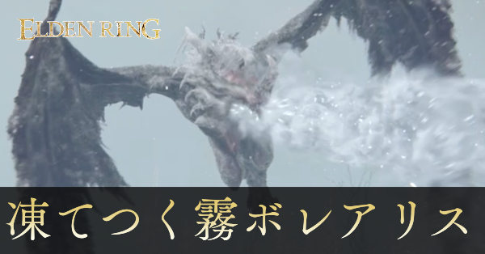bo-ref-001外觀網站封面：正面長吻、額前長角與兩側展開的翼肢，嘴前是霜白氣團。文字不是角色外觀。來源頁 ↗來源圖 ↗原作畫面：FromSoftware / Bandai Namco；逐張截圖者未知
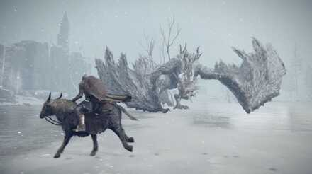bo-ref-003外觀斜側低伏的完整龍體，長尾伸向後方；雙翼折起形成兩個寬大支點。解析度較低，只採輪廓。來源頁 ↗來源圖 ↗原作畫面：FromSoftware / Bandai Namco；逐張截圖者未知
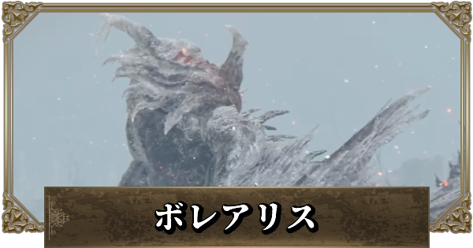bo-ref-005外觀GameWith 封面中的龍首與頸背近景，長角、灰白覆蓋與局部暗紅膜面可辨；金邊與字框不採用。來源頁 ↗來源圖 ↗原作畫面：FromSoftware / Bandai Namco；逐張截圖者未知
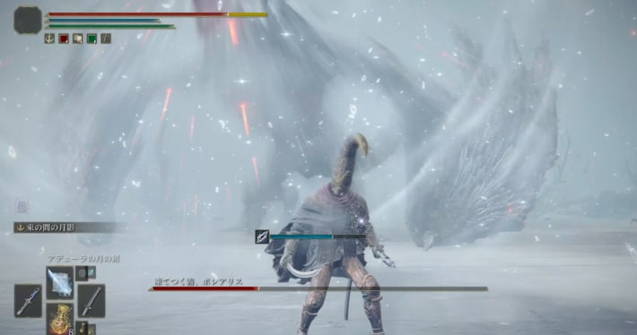bo-ref-007冰霧近身畫面中白色霧浪與亮點向外展開，龍首及翼肢有部分被遮住；單幀不能推算持續時間。來源頁 ↗來源圖 ↗原作畫面：FromSoftware / Bandai Namco；逐張截圖者未知
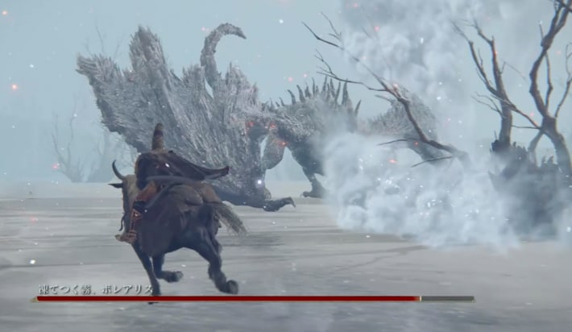bo-ref-008冰霧龍頭低垂向右吐出貼地白霧，翼腕仍接地，長尾後揚；適合校對地面吐息起點。來源頁 ↗來源圖 ↗原作畫面：FromSoftware / Bandai Namco；逐張截圖者未知
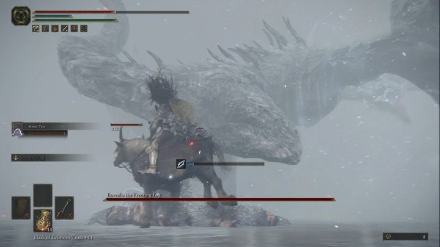bo-ref-010外觀由後腿附近看腹側與長頸；深灰鱗片底色仍在白色覆蓋下露出，翼膜邊緣破碎。來源頁 ↗來源圖 ↗原作畫面：FromSoftware / Bandai Namco；逐張截圖者未知
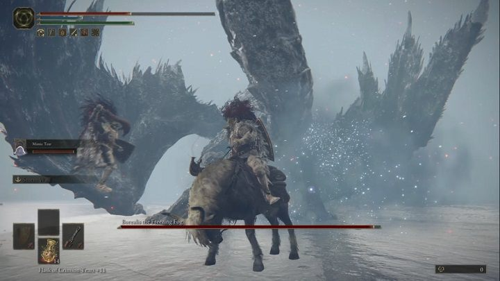bo-ref-011動作仰視近身腿腹與翼根，後腿正抬高；供踩踏蓄力與腹部高度參考，不以單幀量測秒數。來源頁 ↗來源圖 ↗原作畫面：FromSoftware / Bandai Namco；逐張截圖者未知
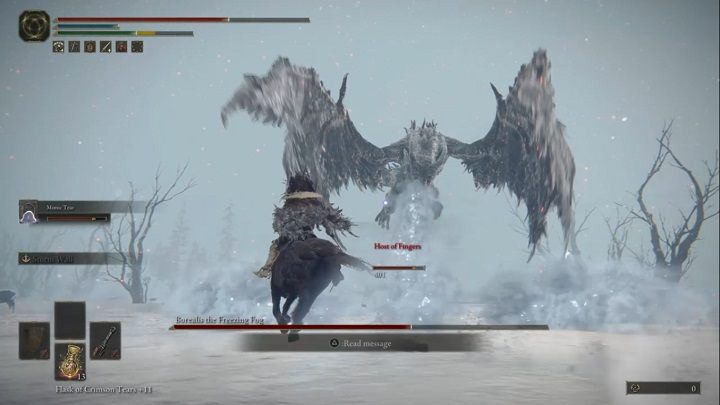bo-ref-012動作升空時雙翼打開、兩隻後腿屈起，長頸上揚；不是四腿再加兩翼的輪廓。來源頁 ↗來源圖 ↗原作畫面：FromSoftware / Bandai Namco；逐張截圖者未知
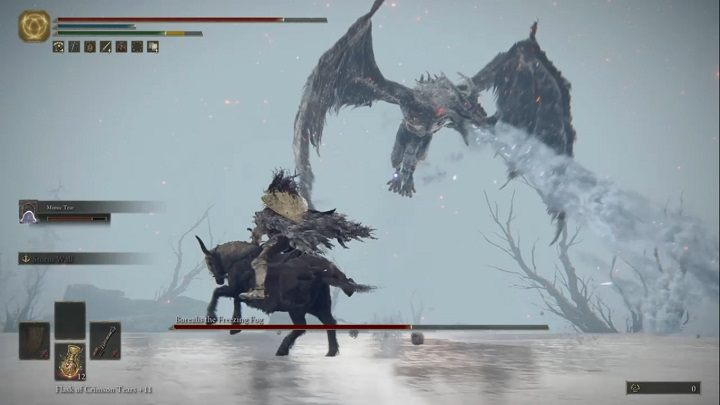bo-ref-013冰霧空中龍體向前下方噴出白霧，雙後腿懸空；作為飛行吐息和直接下墜的視覺區分。來源頁 ↗來源圖 ↗原作畫面：FromSoftware / Bandai Namco；逐張截圖者未知
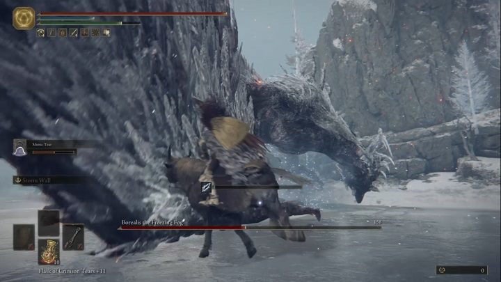bo-ref-014外觀翼根和前方翼肢近照，鱗片粗糙、灰黑底色清楚；邊緣是成束霜白尖片。來源頁 ↗來源圖 ↗原作畫面：FromSoftware / Bandai Namco；逐張截圖者未知
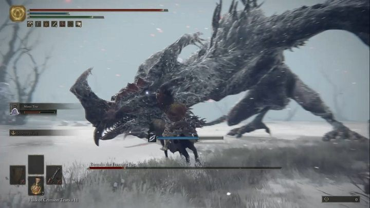bo-ref-015動作長吻壓到近身低處，頸部大幅彎曲；有張口和探頸輪廓，不能僅憑靜圖認定已命中。來源頁 ↗來源圖 ↗原作畫面：FromSoftware / Bandai Namco；逐張截圖者未知
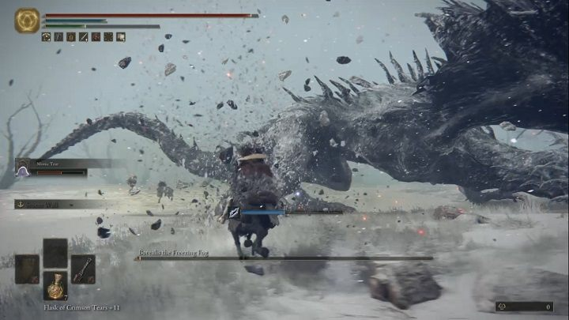bo-ref-016動作側後方長尾彎成弧線、背棘順脊延伸；地面碎屑是動作環境，不能視作冰晶彈幕。來源頁 ↗來源圖 ↗原作畫面：FromSoftware / Bandai Namco；逐張截圖者未知
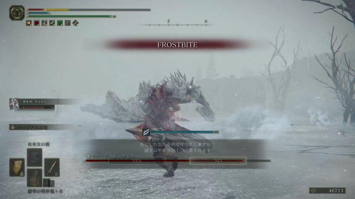bo-ref-017凍傷原作畫面明示 FROSTBITE，龍在遠處白霧中；可用於凍傷提示參考，不把提示字當技能名稱。來源頁 ↗來源圖 ↗原作畫面：FromSoftware / Bandai Namco；逐張截圖者未知
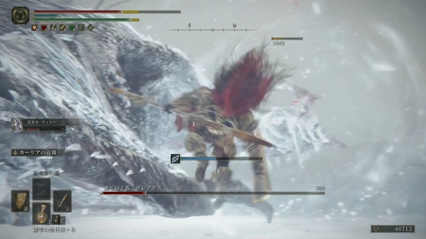bo-ref-018冰霧近身翼肢與龍軀旁有翻起的白霧弧線；紅色部分混有玩家命中特效，不當作龍的火焰。來源頁 ↗來源圖 ↗原作畫面：FromSoftware / Bandai Namco；逐張截圖者未知
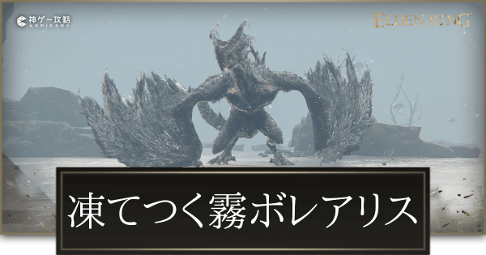bo-ref-019外觀正面全身網站封面：額前長角、低胸與兩個厚重翼腕，後方兩腳和尾部可分辨。來源頁 ↗來源圖 ↗原作畫面：FromSoftware / Bandai Namco；逐張截圖者未知
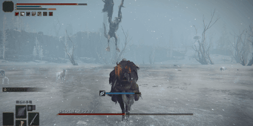bo-ref-021動作遠景空中龍體與下垂長尾，玩家位於冰湖；可確認飛行高度感，不能用透視圖量體長。來源頁 ↗來源圖 ↗原作畫面：FromSoftware / Bandai Namco；逐張截圖者未知
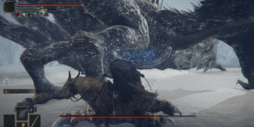bo-ref-022外觀側面近身的翼骨、頸腹與後腿，暗灰鱗面上有白色霜痕，嘴前一側有淡霧。來源頁 ↗來源圖 ↗原作畫面：FromSoftware / Bandai Namco；逐張截圖者未知
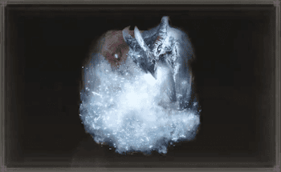bo-ref-023龍饗祈禱遊戲祈禱圖示：龍頭由上向下噴白霧；這是玩家可使用的龍饗圖示，不能當成額外 Boss 招式。來源頁 ↗來源圖 ↗原作畫面：FromSoftware / Bandai Namco；逐張截圖者未知
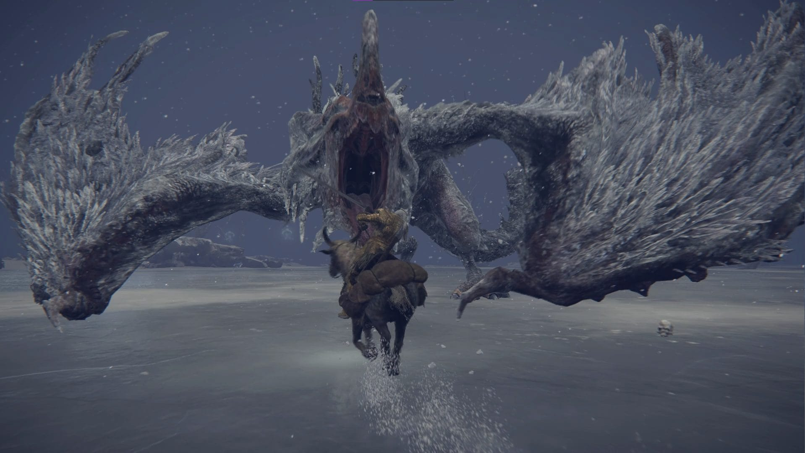bo-ref-024外觀較高解析度正面張口：黑暗口腔、暗紅內膜、霜白鬚片與粗厚翼腕，翼緣成束尖片。已另看原尺寸。來源頁 ↗來源圖 ↗原作：FromSoftware / Bandai Namco；提供頁面：DanielD / EIP Gaming；逐張攝製者未單獨確認
bo-ref-028動作 · GIF五格抽幀：從湖岸看龍低伏吐出白霧、抬起與展翼，長尾在霧外可辨。抽幀只供姿態對照，整段只計一張。來源頁 ↗來源圖 ↗動作抽幀 ↗原作：FromSoftware / Bandai Namco；提供頁面：DanielD / EIP Gaming；逐張攝製者未單獨確認
bo-ref-029動作 · GIF五格抽幀可見正面蓄息、向前白霧、尾部彎曲及抬腿近身動作；不是逐幀招式判定表，整段只計一張。來源頁 ↗來源圖 ↗動作抽幀 ↗原作：FromSoftware / Bandai Namco；提供頁面：DanielD / EIP Gaming；逐張攝製者未單獨確認
bo-ref-030冰霧 · GIF五格抽幀：抬頸張口、白色圓浪向外推、龍體俯低收勢；後段另有近身動作，不能合併推算咆哮時間。整段只計一張。來源頁 ↗來源圖 ↗動作抽幀 ↗原作：FromSoftware / Bandai Namco；提供頁面：DanielD / EIP Gaming；逐張攝製者未單獨確認
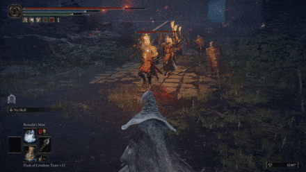bo-ref-031龍饗祈禱 · GIF玩家施法五格：紅色召喚光先出現，再顯現龍頭，向地面吐出白霧，龍頭消散。是玩家祈禱演出，整段只計一張。來源頁 ↗來源圖 ↗動作抽幀 ↗原作畫面：FromSoftware / Bandai Namco；逐張截圖者未知
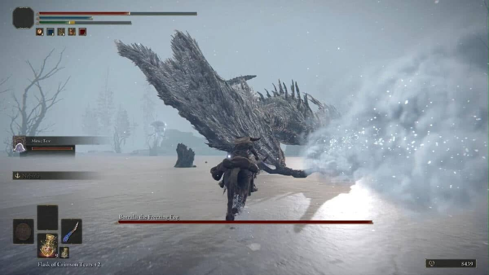bo-ref-034冰霧側面長頸低垂，白霧自龍口沿地面推出，霧中有亮點；藍白色來自冰霧而非火焰。來源頁 ↗來源圖 ↗原作畫面：FromSoftware / Bandai Namco；逐張截圖者未知
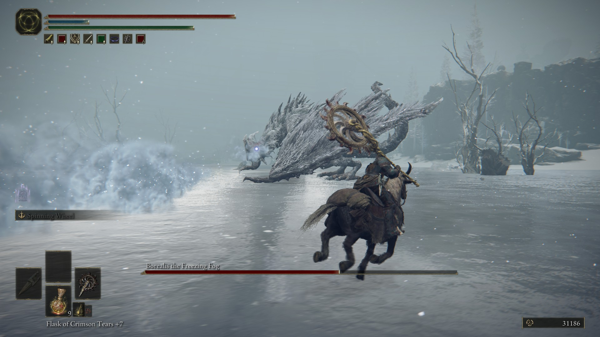bo-ref-035冰霧較完整的斜側地面吐息，兩側折翼、長尾及背棘仍可辨；嘴前白霧形成寬扇面。來源頁 ↗來源圖 ↗原作畫面：FromSoftware / Bandai Namco；逐張截圖者未知
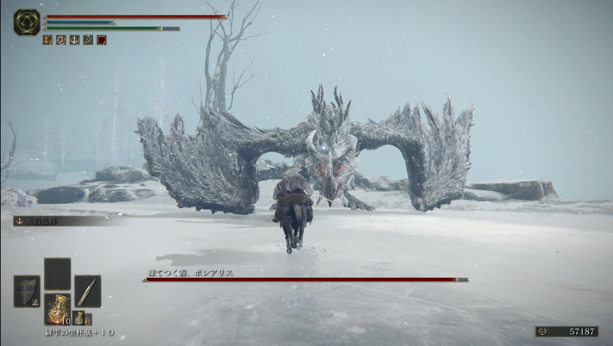bo-ref-036外觀日間正面低伏全身，翼肢朝兩側撐開、頭部居中向前；適合俯視化時保留兩翼腕的辨識度。來源頁 ↗來源圖 ↗原作：FromSoftware / Bandai Namco；玩家文章：西へ東へ；個人本名未核實
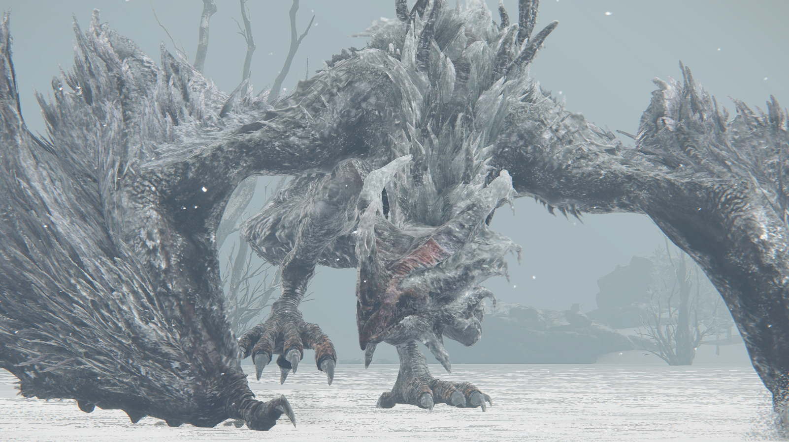bo-ref-037外觀公開攻略縮圖中的前方龍體，霜白翼緣與黑灰鱗甲對比明顯。原頁本輪回應 503，只查看此圖，未核實完整影片。來源頁 ↗來源圖 ↗原作畫面：FromSoftware / Bandai Namco；逐張截圖者未知
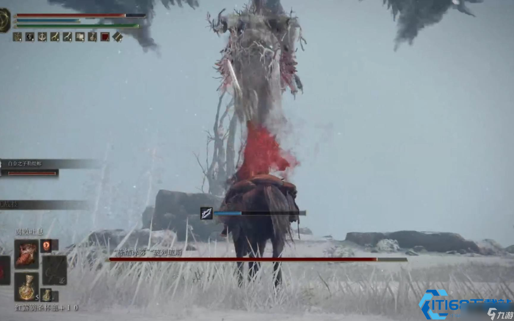bo-ref-038動作龍頸抬高，翼緣向上展開；畫面紅色命中噴濺不作龍本身發紅或噴火的證據。帶第三方轉載水印，原截圖者未知。來源頁 ↗來源圖 ↗原作畫面：FromSoftware / Bandai Namco；逐張截圖者未知
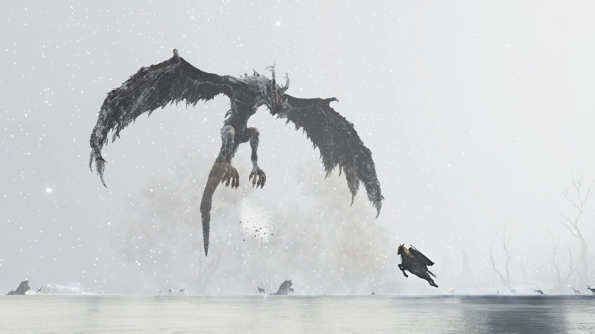bo-ref-039動作空中大幅展翼，兩後腳下垂、尾巴在身後延伸，白色暴雪背景襯出暗色翼膜。來源頁 ↗來源圖 ↗原作畫面：FromSoftware / Bandai Namco；逐張截圖者未知
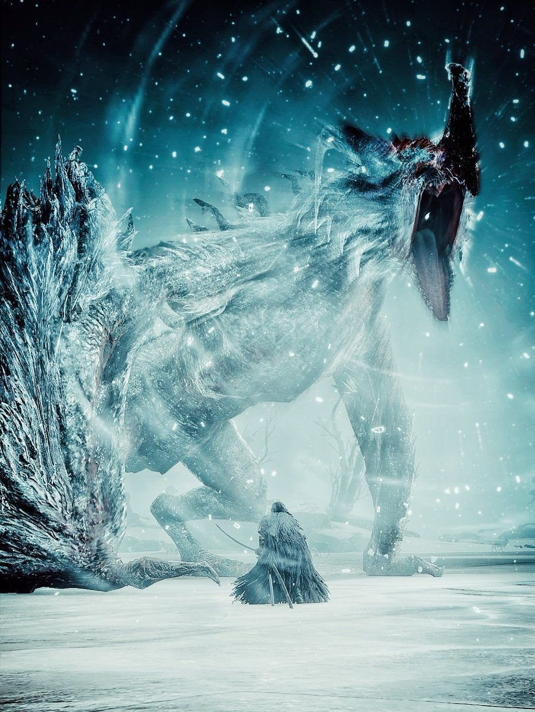bo-ref-040遊戲攝影BBuradori 的青藍色遊戲攝影：近身仰視昂首張口與翼腕，白霜亮片突出。只作演出氣氛參考，後製程度未知，不據此定原作底色。來源頁 ↗來源圖 ↗原作：FromSoftware / Bandai Namco；遊戲攝影署名：Seekers_Sanctuary / @BBuradori；後製程度未知
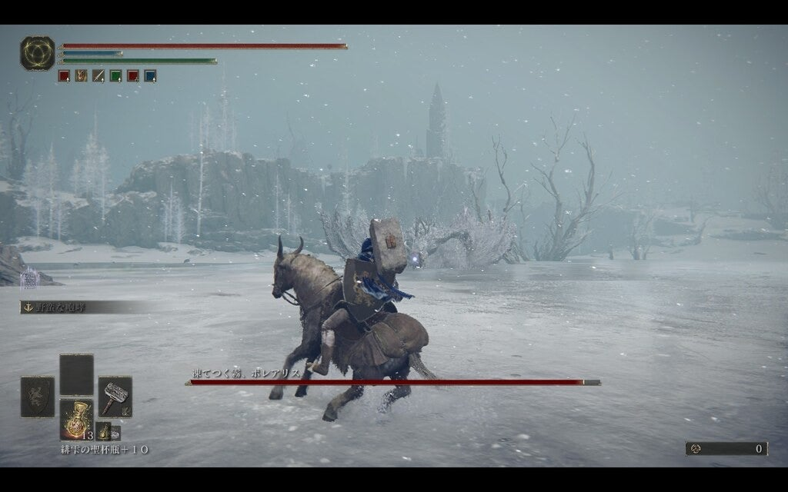bo-ref-044動作玩家文章中的冰湖遠景，龍低伏朝前，翼肢兩側高起；可用於巨大龍體和騎乘角色的尺度感。來源頁 ↗來源圖 ↗原作：FromSoftware / Bandai Namco；玩家文章：yutorinau
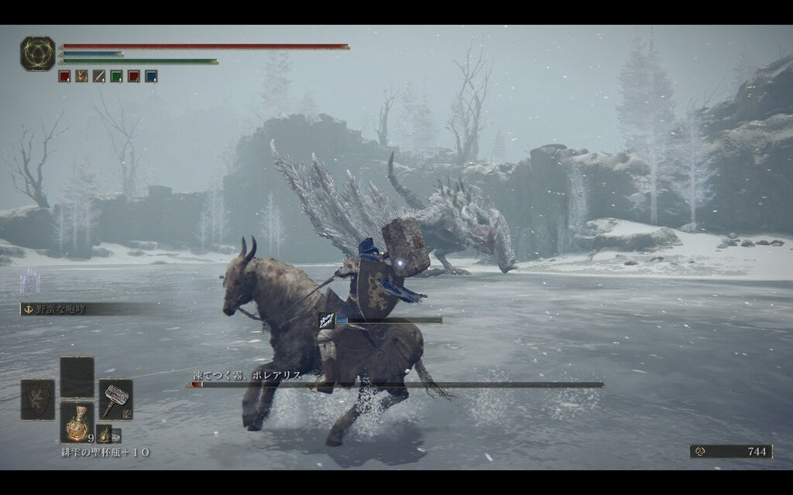bo-ref-045冰霧同篇文章的另一個時刻：龍低頭在左前方吐出白霧，雙翼仍折起；與 044 的姿態和鏡頭不同。來源頁 ↗來源圖 ↗原作：FromSoftware / Bandai Namco；玩家文章：yutorinau
bo-ref-048概念圖Creative Uncut 收錄的獨立白底圖：兩翼肢、兩後腿、彎起長尾、額前長角；翼膜破碎，霜白條片覆住翼緣和背部，黑灰鱗甲與暗紅膜仍露出。已看完整圖；單張作者、官方畫冊頁碼尚未核實。來源頁 ↗來源圖 ↗原作美術權利：FromSoftware / Bandai Namco；收錄：Creative Uncut；單張畫師未核實